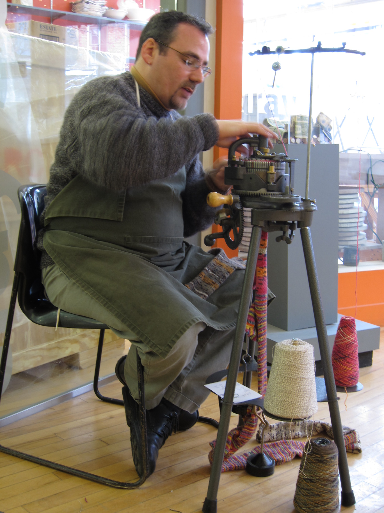
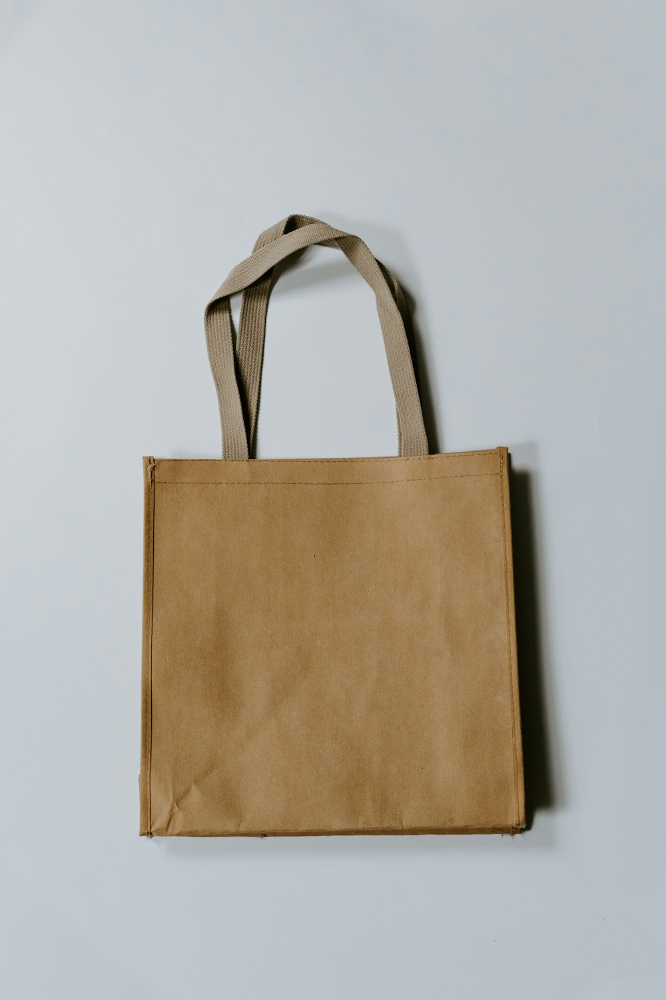

Knitting Mill In Action
Master Craftsmen, Circular Cylinders & Hand Linking
A behind-the-scenes glimpse into our specialized circular knitting machines, yarn cone libraries, and finishing processes.

Precision Cylinder Needles
High-speed rotating cams delivering micro-tension yarn feed with zero snagging or irregular loops.

Certified Organic Cones
Pure ring-spun organic cotton waiting for double-feed cylinder creels in our temperature-controlled yarn room.

Hand-Linked Toe Linking
Our skilled operators inspect every individual toe point on circular linking dials for a flat finish.
Botanical Pigment Baths
Plant-extracted natural dyes derived from indigo leaves, madder roots, and oak galls for soft colors.